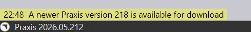
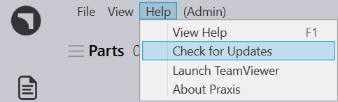
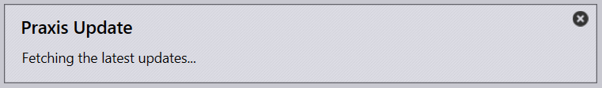
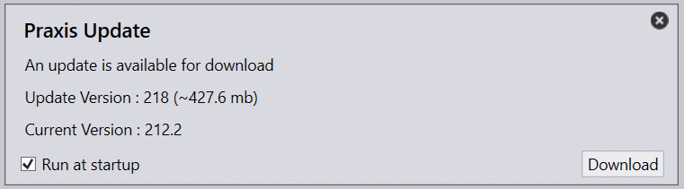
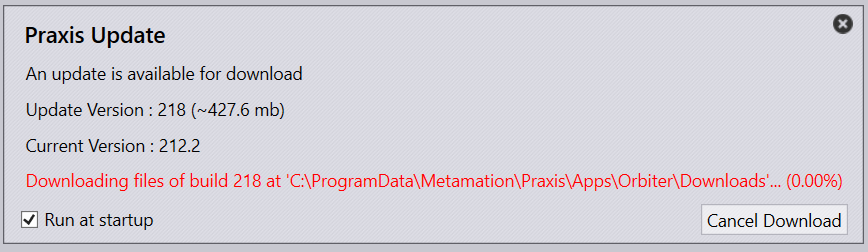
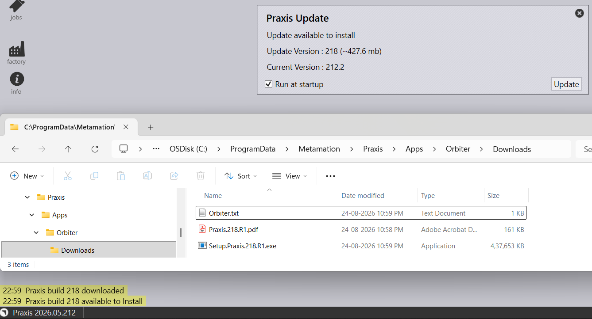
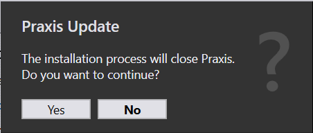
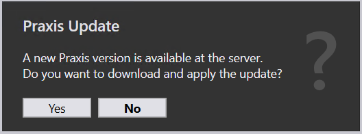
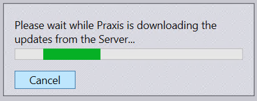
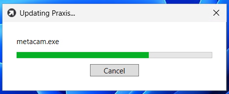

Upgrade
First time opening TruSmartCAM application shows a splash message about newer TruSmartCAM with Build number information available for download to the user.

Server PC Upgrade
Server PC Upgrade can be performed by following methods:
-
Automatic by Orbiter application.
-
Manual using the Installer.
Orbiter Application Help > Check for Updates. This menu command can be used to download and install the latest TruSmartCAM build. It is accessible only to a SiteAdmin user logged on to the TruSmartCAM Server computer.

TruSmartCAM Update dialog appears and starts fetching the latest update information.

It shows the Current Build and Update Build information. Also shows the Download size of the new TruSmartCAM build. Run at Startup option is checked on as default to notify user whenever first time logon daily while opening TruSmartCAM Desktop client.

Click Download. Installer and Release notes are downloaded to folder location : “C:\ProgramData\Metamation\Praxis\Apps\Orbiter\Downloads”

Download complete information appears at the bottom of the TruSmartCAM screen.

Click Update. TruSmartCAM Update appears showing the installation will close TruSmartCAM application and Upgrade of TruSmartCAM installer file is done manually by clicking Next.

Client PC Upgrade
Server PC Upgrade can be performed by following methods:
-
Automatic by Praxis Update application.
-
Manual using the Installer.
Praxis Update Application In Client PC, while opening TruSmartCAM results in Praxis Update dialog which shows new version is available at the server. Click Yes to download and apply the update.

TruSmartCAM starts pulling the files from the Server PC.

Once downloaded, Files are getting updated in the Client PC.
